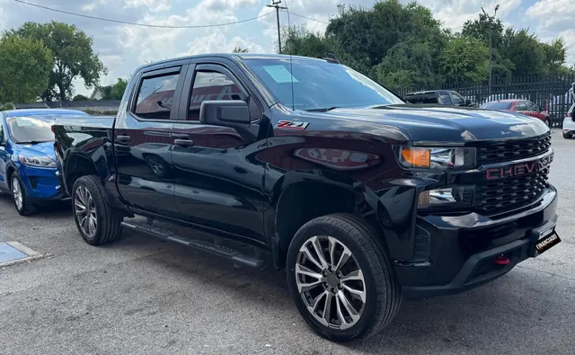

2020 Chevrolet Silverado Z71
Negro • ID CCH-07

1/2Datos generales
| Año | 2020 |
| Marca | Chevrolet |
| Modelo | Silverado Z71 |
| Tipo | Troca |
| Color | Negro |
| Millas | 70,000 millas |
| Asientos | 5 o 6 pasajeros |
Motor y transmisión
| Motor | 4.3L V6 EcoTec3 |
| Potencia | 285 hp |
| Torque | 305 lb-pie |
| Transmisión | Automática de 6 velocidades |
| Tracción | 4x4 |
| Combustible | Gasolina |
Capacidades
| Remolque máximo | 7,500 lbs |
| Tanque de combustible | 24 galones |
| Rendimiento | 15/20 MPG (ciudad/carretera) |
Dimensiones
| Largo | 231.7 pulgadas |
| Ancho | 81.2 pulgadas |
| Distancia entre ejes | 147.4 pulgadas |
Se ve en las fotos
- Cabina doble
- Estribos
- Viseras en ventanas
- Enganche de remolque
- Ganchos de arrastre
Ideal para
Trabajo pesado, obra y caminos de terracería.
Ficha técnica del modelo según el fabricante y medios especializados. Confirma los datos exactos de esta unidad con el dealer.
Z71 es un paquete, no un trim: se reporta el motor base de la Silverado 1500 2020 según TrueCar/MotorTrend (4.3L V6, 285 hp / 305 lb-pie, automática de 6). Tracción 4x4 confirmada (Z71 exige 4x4).
Z71 es un paquete, no un trim; cabina, caja y tracción de la unidad no verificadas. Valores de la ficha J.D. Power para Silverado Custom Crew Cab 4WD 4.3L. / Z71 is a package, not a trim; unit's cab, bed and drivetrain unverified. Values from J.D. Power listing for Silverado Custom Crew Cab 4WD 4.3L.